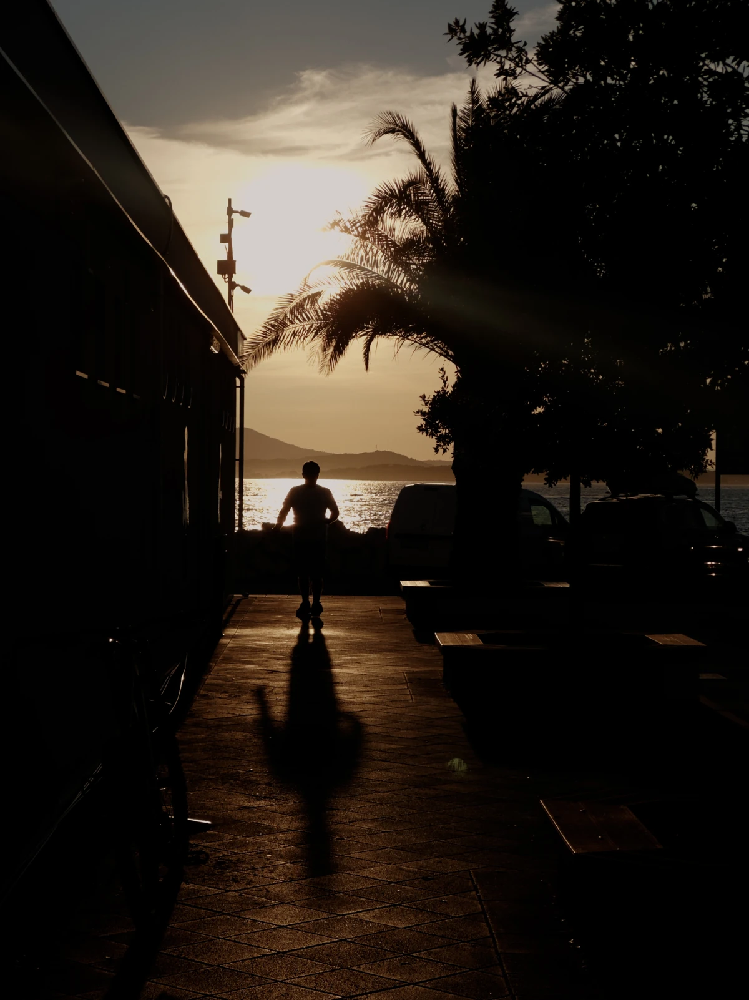

Lucia switches the phone’s cleverness off and develops the RAW itself. No local tone mapping, no lifted shadows, no HDR flattening.
Every shot keeps its RAW. Change the look next week, next year, or after finally admitting that your teal-and-orange phase was a mistake.
Lucia ships with three looks: Photo, Cine and Monochrome. Any .cube LUT works too, the Fujifilm Film Simulations included. Grain, white balance, highlights, shadows: if you shoot Fuji, you know the menu.
Shoot on iPhone. Edit on the big one.


Lucia is in beta and free while it is. Install TestFlight from the App Store, then open the link on the device you want Lucia on.
The camera, the gallery, the editor. One app for both, and the iPad opens the same link.
Get the betaYour whole library on the big screen. Pair once over Wi-Fi. After that, Mac and iPhone connect seamlessly via Lucia Link.
Get the betaiPhone 15 Pro or newer with iOS 18. Mac with macOS 15 or later. iPad with iPadOS 18.